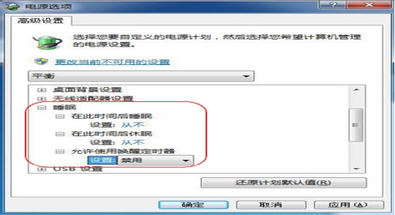

1 系统问题日志保存方法
对于系统类问题，包括系统崩溃、蓝屏、死机，弹窗报错、中毒，或者驱动、软件、补丁问题引起的非硬件问题的无法开机，都可以使用重装系统或还原系统的方法来解决，这虽然解决了问题，但没办法对根因进行分析，无法从源头避免这些问题的再次发生。
其中，蓝屏需记录左下角报错代码，弹窗报错需记录报错信息。
其他的异常关机，系统崩溃等，需记录大概时间后，导出应用日志及系统日志，协助定位异常崩溃的原因。
操作步骤
右键点击计算机-管理

点击事件查看器
点击windows日志
右键点击应用程序-将所有事件另存为，右键点击系统-将所有事件另存为。

选择一个位置，输入名字点保存即可
2 BIOS设置
BIOS是工控机的硬件系统，即使操作系统崩溃，只要计算机主板本身没有问题，就可以正常进入BIOS界面，所以进BIOS界面又是判断主板硬件问题的方法之一。
BIOS界面选项一般包括以下几个分类选项：
其中，常用到的包括：
来电自启动选项
Chipset-PCH-IO Configuration-restore AC Power loss选项中， “S0” (power on), “S5” (power off), or “Last State”.选择S0 (power on)。
部分主板选项在Chipset-Restore AC Power Loss下，可直接选择Power on。
硬盘启动项
在Boot-hard Drive BBS Priorities中，选择希望首启动的硬盘或引导，Enter确认后按F4保存后重启(部分主板为F10保存)
3 PE系统盘
PE系统盘一般用于无法进入系统时，重做系统、硬盘检测、驱动卸载等场景。
右键管理员打开PE制作工具(老毛桃，大白菜，U深度，微PE都可以，其中大白菜和U深度兼容性更好，微PE工具较少)。
3.1 PE盘的制作
插入需要做PE系统的U盘，选中后点击一键制作USB启动盘。
3.2 PE盘的使用
待制作完毕后，将PE系统盘插到工控机上，开机后不断按Del，进入BIOS界面后选择Boot-hard Drive BBS Priorities，选中U盘作为首启动项，保存后重启
选择启动Win10 X64 PE或启动Win2003PE，进入PE系统。
进入PE系统后，主要关注以下几个工具：
3.3 硬盘工具
主要用于格式化系统盘，硬盘分区设置。
3.4 镜像恢复工具
GHOST 11.5
系统还原工具，用于还原系统
还原时，依次选择local-partition-from image
选择D盘
选择C_PAN.GHO文件，选择镜像分区
选择需要恢复的盘符，点击OK等待恢复成功后重启。
3.5 系统引导恢复工具
以及系统驱动卸载工具：DISM++
4 硬件/系统信息抓取工具
管理员模式打开D:\AIDA64 文件夹下aida64.exe文件
点击报告

依次点击下一步-从文件载入-选择报告配置文件-打开-下一步-选中HTML-完成
点击保存为文件，格式为htm文件。
此报告一般用于工控机在出问题时的问题排查。
5 系统设置
5.1 网卡设置
右下角右键单击网络图标，选择打开网络和internet。

点击更改适配器选项，右键选择需要配置的网卡，点击属性-配置-高级
将巨帧数据包(大型数据包)设置为最大值（一般为 9014）。
将“性能选项” 点击属性中的“传送缓冲区”和“接收缓冲区”的值设置为最大 2048， “性能选项”中 “中断节流（裁决）率”，则将其设置为“极值”，如果没有该属性，则不需要设置。
5.2 系统高性能设置
左键点击左下角开始，选择控制面板-电源选项
选择高性能，并关闭休眠

5.3 防火墙设置
打开右下角的网络连接，依次点击：网络—>网络和共享中心—>Windows 防火墙，依次选择关闭。
5.4 Windows 更新设置
右键单击计算机-属性，单击左下角windows update-更改设置
选择从不检查更新